למי שמצטרף לצוותלא מה שאנחנו אומרים על עצמנו, אלא מה שהורים ומתאמנים אומרים עלינו. סרטונים מהשטח, ביקורות בגוגל והודעות ששלחו לנו אחרי אימונים.
הסרטון המלא, 2:24. כדאי לראות עם קול.
הקישו על סרטון כדי לנגן אותו עם קול.
«בהתחלה בגלל נוחות, נשארנו בגלל המקצועיות והאכפתיות»הורה למתאמן בקבוצת הילדים
עברנו על 63 ההמלצות שבדף הזה וספרנו כמה מהן מזכירות כל דבר.
נהנים, שמחים, מחכים לאימון הבא. גם ילדים שלא אהבו ספורט.
אימון שבנוי מראש, מאמן מוכשר, תוצאות שרואים בבית.
כל אחד לפי הרמה שלו, בגובה העיניים, עם מאמן שמכיר אותו.
מילה במילה, כולל שגיאות הכתיב. בלי שמות, כדי לשמור על הפרטיות של המשפחות. «…» מסמן שם שהוסר.
הביקורות נמצאות בגוגל, כולל מי שנתן כוכב אחד, ואפשר לקרוא הכל בלעדינו. כך זה נראה (ספירה מ-22/09/2026):
לקרוא את כל הביקורות בגוגלמי שעובד איתנו לא צריך להמציא כלום ולא צריך לשכנע אף אחד במשהו שהוא לא מאמין בו. הוא מספר להורה הבא מה שההורים שלפניו כבר אמרו.
יש שאלה? תענו לי בהודעה שבה קיבלתם את הקישור.
רועי לידרמן, מייסד Team Lider